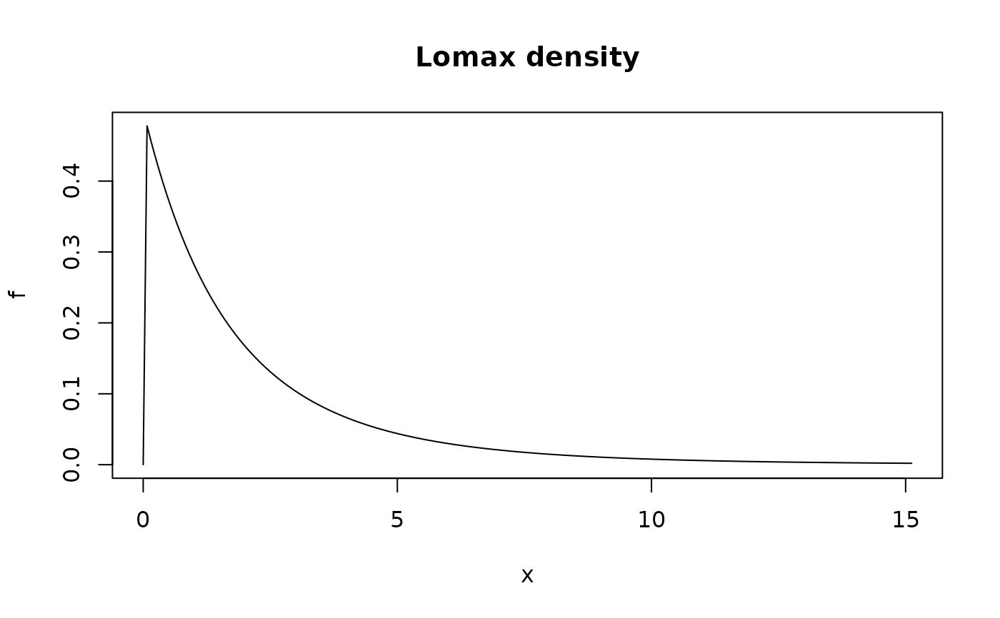
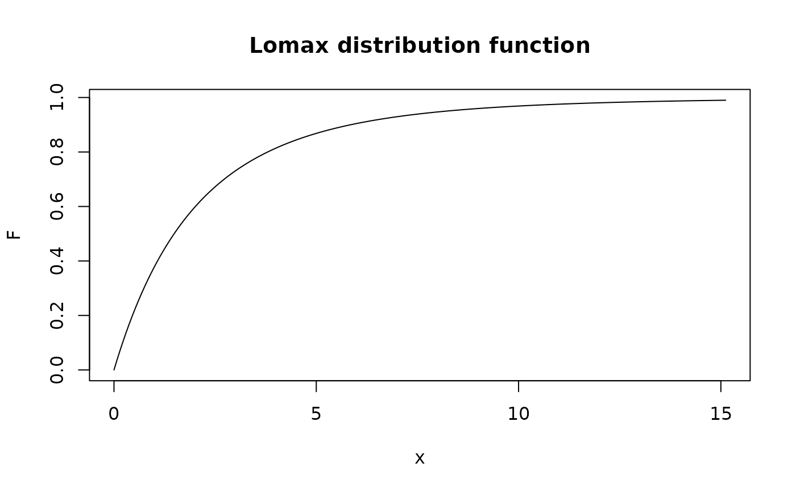

Lomax distribution
Lomax.RdDensity function, distribution function, quantile function and random generation for the Lomax distribution.
Usage
dlomax(x, scale = 1.0, shape = 4.0, log = FALSE)
plomax(q, scale = 1.0, shape = 4.0, lower.tail = TRUE)
qlomax(p, scale = 1.0, shape = 4.0)
rlomax(n, scale = 1.0, shape = 4.0)Arguments
- x, q
-
Vector of quantiles.
- p
-
Vector of probabilities.
- n
-
Number of observations.
- scale, shape
-
Scale and shape parameters. Vectors of length > 1 are not accepted.
- log
-
Logical; if
TRUE, the log density is returned. - lower.tail
-
Logical; if
TRUE(default), probabilities are \(\textrm{Pr}[X <= x]\), otherwise, \(\textrm{Pr}[X > x]\).
Details
The Lomax distribution function with shape \(\alpha > 0\) and scale \(\beta > 0\) has survival function $$S(y) = \left[1 + y/\beta \right]^{-\alpha} \qquad (y > 0)$$ This distribution has increasing hazard and decreasing mean residual life (MRL). The coefficient of variation decreases with \(\alpha\), and tends to \(1\) for large \(\alpha\). The default value \(\alpha=4\) corresponds to \(\textrm{CV} = \sqrt{2}\).
Value
dlomax gives the density function, plomax gives the
distribution function, qlomax gives the quantile function, and
rlomax generates random deviates.
Note
This distribution is sometimes called log-exponential. It is a special case of Generalised Pareto Distribution (GPD) with positive shape \(\xi > 0\), scale \(\sigma\) and location \(\mu=0\). The Lomax and GPD parameters are related according to $$\alpha = 1/\xi, \qquad \beta = \sigma/\xi.$$ The Lomax distribution can be used in POT to describe excesses following GPD with shape \(\xi>0\) thus with decreasing hazard and increasing Mean Residual Life.
Note that the exponential distribution with rate \(\nu\) is the limit of a Lomax distribution having large scale \(\beta\) and large shape \(\alpha\), with the constraint on the shape/scale ratio \(\alpha/\beta = \nu\).
References
Johnson N. Kotz S. and N. Balakrishnan Continuous Univariate Distributions vol. 1, Wiley 1994.
See also
flomax to fit the Lomax distribution by Maximum
Likelihood.
Examples
shape <- 5; scale <- 10
xl <- qlomax(c(0.00, 0.99), scale = scale, shape = shape)
x <- seq(from = xl[1], to = xl[2], length.out = 200)
f <- dlomax(x, scale = scale, shape = shape)
plot(x, f, type = "l", main = "Lomax density")

F <- plomax(x, scale = scale, shape = shape)
plot(x, F, type ="l", main ="Lomax distribution function")
